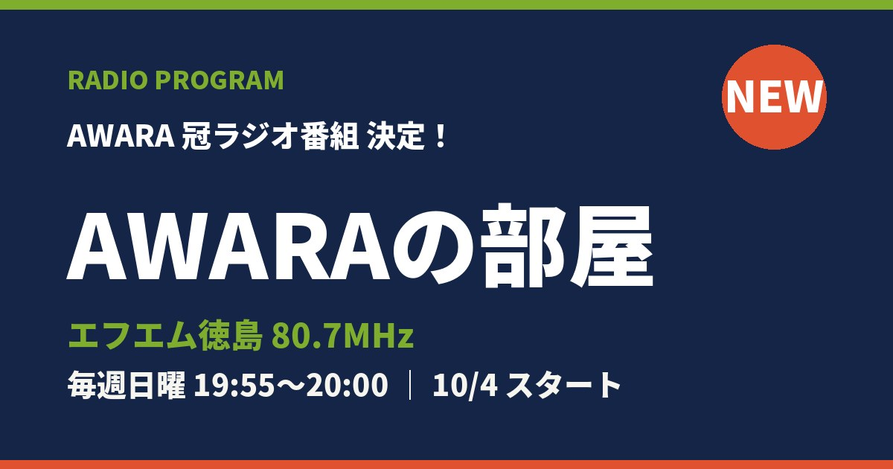

2026.9.27
エフエム徳島でAWARAの冠ラジオ番組がはじまります📻

このたび、AWARA初の冠ラジオ番組「AWARAの部屋」の放送が決定しました！
徳島のラジオ局・エフエム徳島（80.7MHz）にて、毎週日曜よる7時55分から、AWARAのふたりがお送りする5分間。ゆる〜くもクセになる、AWARAの"部屋"にぜひ遊びに来てください。10月4日（日）が記念すべき第1回のオンエアです。
スマホアプリ「radiko（ラジコ）」ならエリアフリーで徳島県外からでも聴けます。全国どこにいても、日曜の夜はぜひAWARAの部屋へ！
- 番組名
- AWARAの部屋
- 放送局
- エフエム徳島（FM徳島）80.7MHz
- 放送日時
- 毎週 日曜日 19:55〜20:00
- 放送開始
- 2026年10月4日（日）
- 聴取方法
- 徳島県内：ラジオ 80.7MHz
県外：radiko（エリアフリー）
※放送内容・時間は変更になる場合があります。最新情報はAWARA公式SNSでもお知らせします。応援よろしくお願いします！